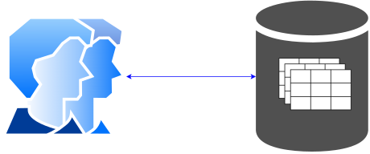

9 Elementary Data Structures
Data Abstraction
Data abstraction is a process of hiding the implementation details of data structures and operations, while exposing only the essential features and functionalities to the user.
9.1 Array
Array
An array is a fixed collection of same-type data that are stored contiguously and that are accessible by an index.
A dynamic array is an array whose size can be changed during the execution of the program.
Example of The sieve of Eratosthenes
- A simple program prints out all prime numbers less than N.
void sieve(int N) {
int i;
int *a = new int[N];
for (i = 2; i < N; i++) a[i] = 1;
for (i = 2; i < N; i++)
if (a[i])
for (int j = i; i*j < N; j++) a[i*j] = 0;
for (i = 2; i < N; i++)
if (a[i]) cout << " " << i;
delete[] a;
}- Challenge: analysis the program
9.2 Linked Lists
Linked Lists
A linked list is a set of items where each item is part of a node that also contains a link to a node. It allows the items be arranged in a linear order.
Example of Josephus Election
- Imagine that N people have decided to elect a leader by arranging themselves in a circle and eliminating every Mth person around the circle, closing ranks as each person drops out. The problem is to find out which person will be the last one remaining
- If N=9 and M=5
Singly Linked Lists
Data Structure for List Node
- We use pointers for links and structures for nodes
struct ListNode {
DataType data;
ListNode *next;
ListNode(DataType data, ListNode *next=nullptr) {
this->data = data;
this->next = next;
}
};
typedef ListNode *Link;Create a List Node
- Creating a new node
ListNode *p = new ListNode(...);- We so often need to use the phrase “the node referenced by link
p” that we simply say “nodep” - It is a null link that points to no node.
- It refers to a dummy node that contains no data.
Delete a List Node
- Deleting a node
ListNode *p;
...
delete p;- Writing a function to delete a node
void deleteNode(ListNode *p)
{
...
}Deep Deletion
- Deleting a node and its link
- Writing a function to delete a node deeply
void deepDeleteNode(ListNode *p)
{
...
}Organize a Linked List
Data Structure for Linked List
struct LinkedList {
ListNode *first; // or ListNode *head;
LinkedList() {
this->first = nullptr;
}
};Insert at The Beginning
Traversing a Linked List
Assign List head to node pointer.
while node pointer is not null
Display the value member of the node pointed to by node pointer.
Assign node pointer to its own next member.Another Data Structure for Linked List
struct LinkedList {
ListNode *first;
ListNode *last;
LinkedList() {
this->first = nullptr;
this->last = nullptr;
}
};Insert at The End
Remove from The Beginning
Search
ListNode *search(ListNode *first, DataType k) {
ListNode *current = first;
while(current) {
if (current->data == k) then return current;
current = current->next;
}
return nullptr;
}Ordered Linked List
Ordered Linked List
An ordered linked list is a data structure that maintains a collection of elements in a linear sequence. The elements in an ordered linked list are arranged in a specific order, such as ascending or descending, based on the values of the elements.
Insert
Create a new node.
Store data in the new node.
if there are no nodes in the list then
Make the new node the first node.
else
Find the first node whose value is greater than or equal to the new
value, or the end of the list (whichever is first).
Insert the new node before the found node, or at the end of the list
if no such node was found.Dummy Head Node
A dummy head node is a head node that does not store any actual data related to the problem.
Sort
Sorting an unordered linked list is arranging the elements of the list in a specific order, typically ascending or descending
9.3 Variations on Linked List
Circular Linked Lists
Circular Linked Lists
Circular linked list is a variation of linked list in which the last element points to the first element (or the first element points to the last element and).
Doubly Linked Lists
Doubly Linked Lists
Doubly linked is a variation of linked list in that it has two pointers. One points to the next node as before, while the other points to the previous node.
Generalized Lists
How to Extend Linked List
We can extend a data structure of linked list by abstracting - Data field - Link field
Multi-Linked List
A multi-linked list is a variation of the traditional linked list data structure where each node can have multiple pointers, or references, to other nodes, creating a hierarchical structure.
- Skip List

Multi-Linked List
Generalized Lists
A generalized list l is a finite sequence of n\geq0 elements, \{e_{0},e_{1},\ldots,e_{n-1}\}, where e_{i} is either an element or a generalized list.
struct GenListNode {
bool tag;
GenListNode* next;
union {
DataType data;
GenListNode* down;
};
};- Consider the generalized list L=((a,b,c),((d,e),f),g)
9.4 Stack
Stack
A stack is a data structure that stores and retrieves items in a last-in-first- out (LIFO) manner.
Stack API
| method | description |
|---|---|
boolean isEmpty() |
is the stack empty? |
int size() |
number of items in the stack |
void push(Item item) |
add item to the stack |
Item top() |
most recently added item |
void pop() |
remove the most recently added item |
Stack applications
- Parsing in a compiler.
- Java virtual machine.
- Undo in a word processor.
- Back button in a Web browser.
- PostScript language for printers.
- Implementing function calls in a compiler.
- …
Function calls
- How a compiler implements a function.
- Function call: push local environment and return address.
- Return: pop return address and local environment.
Remove recursion
- Recursive function: Function that calls itself.
- Can always use an explicit stack to remove recursion.
- Challenge: reimplement quicksort without using recursion
Arithmetic expression
Arithmetic expression can be represented in
infix
⟨operand 1⟩ ⟨operator⟩ ⟨operand 2⟩prefix (Polish Notation)
⟨operator⟩ ⟨operand 1⟩ ⟨operand 2⟩postfix (Reverse-Polish Notation)
⟨operand 1⟩ ⟨operand 2⟩ ⟨operator⟩
| infix | prefix | postfix |
|---|---|---|
A+B*C |
+*BCA |
BC*+A |
(A-B)/C |
/-ABC |
AB-C/ |
(A+B)*(C-D) |
*+AB-CD |
AB+CD-* |
Conversion of an infix expression to postfix
- Convert
infixExptopostfixExp
stackOps.push('(')
infixExp.append(')')
while not infixExp.end()?
tok ← infixExp.nextToken()
if tok is operand then postfixExp.append(tok)
if tok is "(" then stackOps.push(tok)
if tok is operator then
while precedence of stackOps.top() is higher than or equal tok?
postfixExp.append(stackOps.pop())
stackOps.push(tok)
if tok is ")" then
while stackOps.top() is not "("?
postfixExp.append(stackOps.pop())
stackOps.pop()Example
- Convert the infix expression
(A+B)*(C-(D+A))into a postfix expression
tok |
stackOps |
postfixExp |
|---|---|---|
Arithmetic expression evaluation
- A simple version of two-stack algorithm proposed by E. W. Dijkstra
Scan tokens from the expression (fully parenthesized)
if token is
- Value: push onto the value stack.
- Operator: push onto the operator stack.
- Left parenthesis: ignore.
- Right parenthesis:
- pop operator and two values.
- push the result of applying that operator to those values onto the
operand stack.- Evaluate the expression
( 1 + ( ( 2 + 3 ) * ( 4 * 5 ) ) )
Implementation (simple)
- Input
inis a arithmetic expression that is fully parenthesized and contains delimiters (space characters)
double evaluate(istream& in) {
stack<string> ops;
stack<double> vals;
string tok;
while (!in.eof()) {
in >> tok;
if (tok == "(");
else if (tok == "+" || tok == "*") ops.push(tok);
else if (tok == ")") {
string op = ops.top(); ops.pop();
double val2 = vals.top(); vals.pop();
double val1 = vals.top(); vals.pop();
if (op == "+") vals.push(val1 + val2);
else if (op == "*") vals.push(val1 * val2);
}
else vals.push(stod(tok));
}
return vals.top();
}9.5 Queue
Queue
A queue is a data structure that stores and retrieves items in a first-in- first-out (FIFO) manner.
Queue API
| method | description |
|---|---|
boolean isEmpty() |
is the queue empty? |
int size() |
number of items in the queue |
void enqueue(Item item) |
add item to the queue |
void dequeue() |
remove the least recently added item |
Item front() |
the least recently added item |
Queue applications
- Operating systems (queuing messages, IO requests, mouse movements, etc),
- Web servers (queuing incoming requests, file operations, etc)
- Ticket counter line where people who come first will get his ticket first
- Bank line where people who come first will done his transaction first
- …
9.6 Deque
Deque
The deque stands for Double Ended Queue. Deque is a linear data structure where the insertion and deletion operations are performed from both ends. We can say that deque is a generalized version of the queue.
Some restricted deques
- If we insert at the end and remove at the end, we get a stack
- if we insert at the end and remove at the beginning, we get a FIFO queue
Array-based deque
Deque API
| method | description |
|---|---|
void push_front(Item item) |
Insert item at the front |
void push_back(Item item) |
Insert item at the back |
void pop_front() |
Remove at the front |
void pop_back() |
Remove at the back |
| … |
9.7 Symbol Tables
Introduction
A symbol table is a data structure of key-value pair abstraction that supports two basic operations:
- Insert a value (item) with specified key.
- Given a key, search for the corresponding value.
- For example, DNS lookup.
- Insert domain name with specified IP address.
- Given domain name, find corresponding IP address.
Symbol table applications
| Application | Purpose Of Search | Key | Value |
|---|---|---|---|
| dictionary | find definition | word | definition |
| book index | find relevant pages | term | list of page numbers |
| file share | find song to download | name of song | computer ID |
| financial account | process transactions | account number | transaction details |
| web search | find relevant web pages | keyword | list of page names |
| compiler | find properties of variables | variable name | type and value |
| routing table | route Internet packets | destination | best route |
| DNS | find IP address | domain name | IP address |
| reverse DNS | find domain name | IP address | domain name |
| genomics | find markers | DNA string | known positions |
| file system | find file on disk | filename | location on disk |
Abstract Data Type
Symbol-Table Abstract Data Type
template <class Key, class Value>
class SymbolTable {
private:
// Implementation-dependent code
public:
int count() = 0;
Value search(Key) = 0;
void insert(Key, Value) = 0;
void remove(Key) = 0;
Key select(int) = 0;
};Conventions
- Value type:
- Any generic type.
- Values are not null. (
nullValue)
- Key type:
- Keys are any generic type.
- Keys are Comparable.
- Keys are unique and not null. (
nullKey)
Ordered Symbol-Table Abstract Data Type
- For ordered symbol-table, we need the following additional methods
| Methods | Meanings |
|---|---|
Key min() |
smallest key |
Key max() |
largest key |
Key floor(Key key) |
largest key less than or equal to key |
Key ceiling(Key key) |
smallest key greater than or equal to key |
Key select(int k) |
key of rank k |
int rank(Key key) |
number of keys less than key |
vector<Key> range(int l, int r) |
keys in sorted set of keys [l..r] |
vector<Key> keys(Key lo, Key hi) |
keys in [lo..hi], in sorted order |
Examples of ordered symbol table API
Elementary Implementations
Array-based Symbol Table
template <class Key, class Value>
class ArraySymbolTable: public SymbolTable<Key, Value> {
private:
Value *values;
Key *keys;
int N;
public:
ArraySymbolTable() {
...
}
...
};Sequential Search
- The
searchfunction can scan through the array ofkeysto look for an item with the specifiedkey, returningnullValuewhen encountering an item with a larger key
Value seqsearch(int l, int r, Key key) {
for(int i=l; i<=r; i++)
if (keys[i] == key) return values[i];
return nullValue;
}
Value search(Key key) {
return seqsearch(0, N-1, key);
}Challenge: Can we make any improvement?
Analysis
Sequential search in a symbol table with N ordered items uses about N/2 comparisons for search hits andh search misses (on the average)
Binary Search
Idea
Given that the array
keysis sorted, the search checks the middle element of the active region.
- If the middle element is the target element, the search terminates.
- Otherwise, the search recursively continues to the left or right half of the region, depending on the value of the middle element.
Value binsearch(int l, int r, Key key) {
int m;
do {
m = (l + r) / 2;
if (keys[m] == key)
return values[m];
else if (keys[m] > key)
r = m - 1;
else
l = m + 1;
} while (l <= r);
return nullValue;
}Challenge: Reimplement the function using recursion.
Analysis
Binary search never uses more than \log_{2}(N+1) comparisons for a search (hit or miss)
Interpolation Search
- We can replace the formula m\gets l+\frac{1}{2}(r-l) with m\gets l+\frac{key-keys[l]}{keys[r]-keys[l]}(r-l)
Selection
Problem. Finding the k-th smallest of a set of keys without required full sort.
template <class Item>
void select(Item a[], int l, int r, int k) {
if (r <= l) return;
int i = partition(a, l, r);
if (i > k) select(a, l, i - 1, k);
if (i < k) select(a, i + 1, r, k);
}Challenge: reimplement the function without using recursion
Analysis
Quicksort-based selection is linear time on the average
Cost summary for basic symbol-table implementations
| implementation | search (worst) | insert (worst) | remove (worst) | search hit (avg) | insert (avg) | remove (avg) | ordered iteration | key |
|---|---|---|---|---|---|---|---|---|
| unordered list | N | 1 | N | N/2 | 1 | N/2 | no | equal |
| ordered list | N | N | N | N/2 | N/2 | N/2 | yes | compare |
| ordered array | \log_{2}N | N | N | \log_{2}N | N/2 | N/2 | yes | compare |
| goal? |
9.8 Workshop
Quiz
What is a linked list?
What is a stack?
What is a queue?
A letter means push and an asterisk means pop in the sequence
EAS*Y*QUE***ST***IO*N***Give the sequence of values returned by the pop operations.
An uppercase letter means put at the beginning, a lowercase letter means put at the end, a plus sign means get from the beginning, and an asterisk means get from the end in the sequence
EAs+Y+QUE**+st+*+IO*n++*Give the sequence of values returned by the get operations when this sequence of operations is performed on an initially empty deque.
Projects
Design and implement class
PolynomialDesign and implement class
TensorDesign and implement class
SparseMatrixDesign and implement class
Expression(Big project) Design and implement a tiny relational database project.
